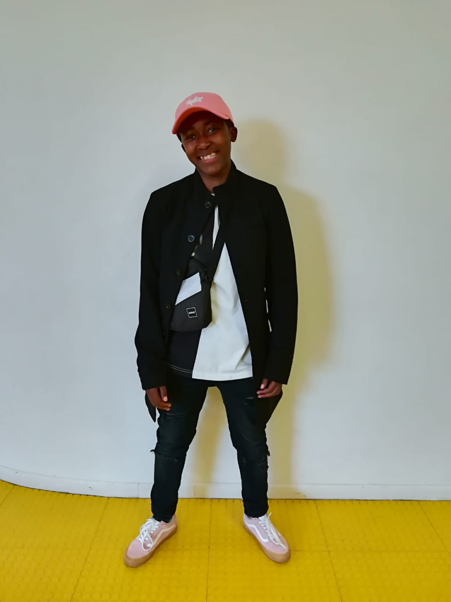

PROFILE IMAGE
PERSONAL DETAILS
NAME : Khanya
SURNAME : Xesi
AGE : 22
PLACE OF BIRTH : Cape Town
HOBBIES : I play soccer, chess and code
INTERESTS : Elevate IT career, get into forensic, become a proffessional footballer
OTHER INTERESTS : Marketing & Finance
CAREER : Web developer/Biotechnology graduate/Footballer
SUMMARY : I’m a passionate instructional designer, I worked at IT varsity with a team of instructional designers called Clinnk.
EDUCATION BACKGROUND
2015/01/27 – 2017/12/05
Matriculated in 2017
2018/02/04 – 2018/11/26
I studied Natural medicine for 1 year but did not complete the degree
2019/02/04 – 2021/12/15
I completed BSc Biotechnology degree. I am expecting to graduate in April 2022.
2020/11/01- 2021/10/31
Completed NQF Level 5 Systems Development. SAQA ID: 48872
MY SKILLS
EXPERIENCE HISTORY
2020/11/01 – 2021/10/31
Web, software and app developer. I Built and maintained websites, software systems and mobile apps.
2020/12/1–2021/08/31
Created content for E-Learning, from grades R up 7.
I also worked as a QA member to make sure that the quality of the content is good and correct.
I landed a major assignment to build a website for a client: Deen Pro an Islamic school that teaches the Qur’an. I collaborated with a colleague.